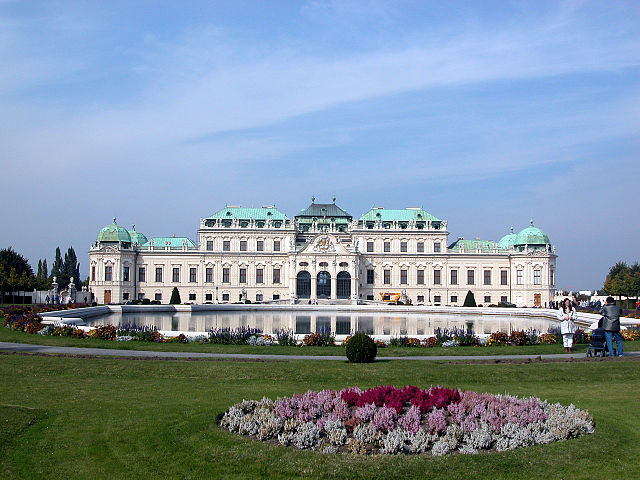

Présentation

Vienne est un mélange d’architecture fastueuse, de musique et de charme pittoresque.
Semblable à nulle autre, Vienne préserve intact son aspect historique d’origine marqué par des édifices fastueux datant de l’époque baroque et des débuts du XXème siècle.
La moitié de la ville est située sur le Danube et offre des parcs, la forêt viennoise et même des zones viticoles pour les loisirs.

Le centre ville
Le centre proprement dit (Innere Stadt) est le premier arrondissement, c'est l'emplacement de la Vienne historique, sur la rive droite du Danube. Il est entouré du Ring, premier et deuxième boulevards circulaires, un dans chaque sens de circulation. Il comprend en son sein, entre autres, le palais impérial Hofburg qui, avec ses dépendances, occupe une grande partie de la superficie de l'arrondissement.

Le palais du Belvédère
Le palais du Belvédère (en allemand Schloss Belvedere) est l'un des plus grands palais baroques de Vienne, à la frontière des troisième (Landstrasse) et quatrième arrondissements (Wieden) de la ville. Le 15 mai 1955, le Traité d'État autrichien, par lequel l'Autriche retrouvait son indépendance après la Seconde Guerre mondiale, y fut signé. Son architecture est du style baroque. Il a été construit par Lukas von Hildebrandt.

Le Burgtheater
Le Burgtheater est un théâtre de Vienne inauguré en 1888. Considéré comme l'une des scènes les plus importantes d'Europe, il est, après la Comédie-Française, le deuxième plus vieux théâtre européen et le plus grand théâtre germanique. Le bâtiment s'élève sur le Ring, le boulevard circulaire de la capitale de l'Autriche.

Le Musikverein
Le Musikverein de Vienne — de son nom complet Haus des Wiener Musikvereins (« Maison de l’Union Musicale de Vienne » –, inauguré le 6 janvier 1870, est une salle de concert réputée pour son acoustique et considérée comme l'une des trois plus belles salles du monde avec le Symphony Hall de Boston et le Concertgebouw d'Amsterdam.

La Gloriette de Schönbrunn
Le château de Schönbrunn (/ʃønbʁun/) est un élément significatif de la culture autrichienne. Depuis les années 1960, c'est l'un des sites touristiques les plus visités de Vienne. Le château de Schönbrunn est classé au patrimoine mondial de l'Unesco depuis 1996.

Le Prater
Le Prater est une grande étendue verte au sein de la ville de Vienne, située entre le Danube et le canal du Danube. Il regroupe la Grande Roue, symbole de la ville de 65 m de haut, une fête foraine permanente, un parc, le plus grand stade autrichien – le Stade Ernst Happel, ainsi que le palais des congrès de la ville.